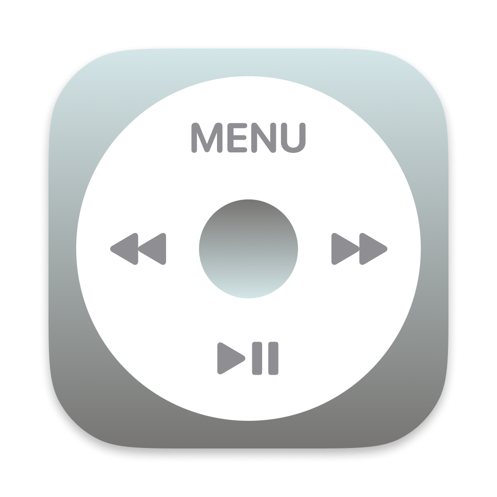
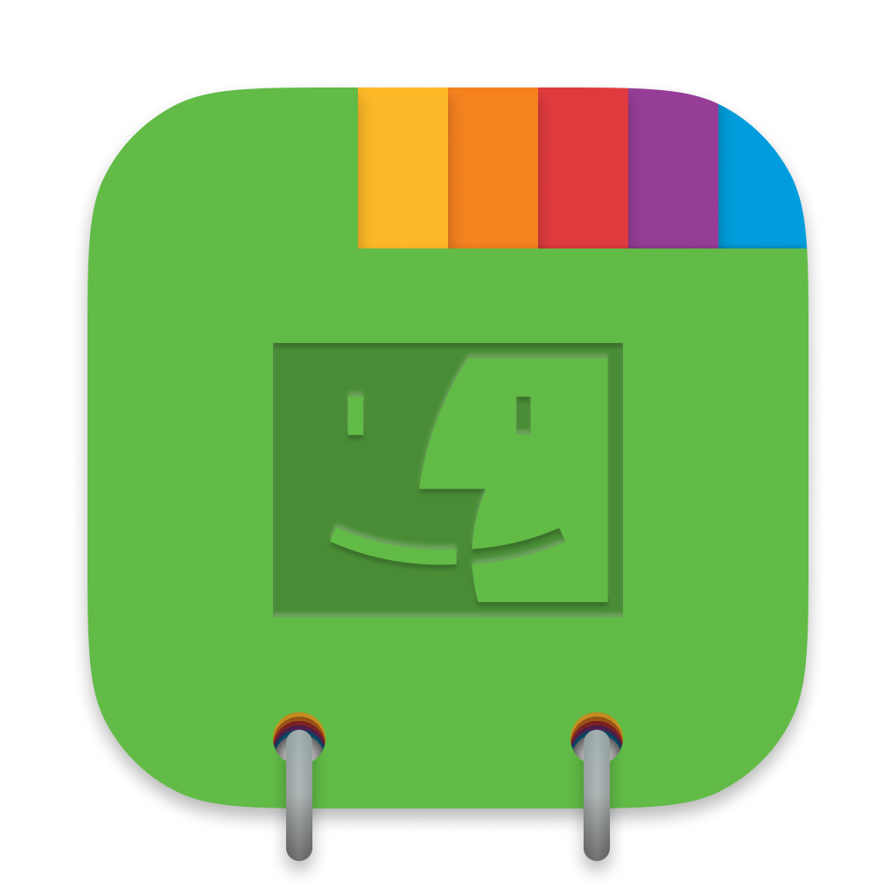

Icons
This is my collection of icons, made for macOS. These used to be put on macOSicons.com until I felt these were not suited to be published there. Please enjoy these, and of course, you can find the source on my Figma page. These icons are more skeuomorphic than the default macOS icons but are more simple than the old aqua icons.
To download, just save the images.
How to install
Finder requires different steps- To theme system icons, you need to disable System Integrity Protection first.
-
Select the application you want to theme in Finder.
It might be in
/Applicationor/Users/username/Applications. -
Choose
File > Get Infoor enter ⌘+I. - Drag-and-drop the downloaded icon onto the icon onto the existing icon on the Get Info menu.
- You may need to unpin the icon to see it refresh



